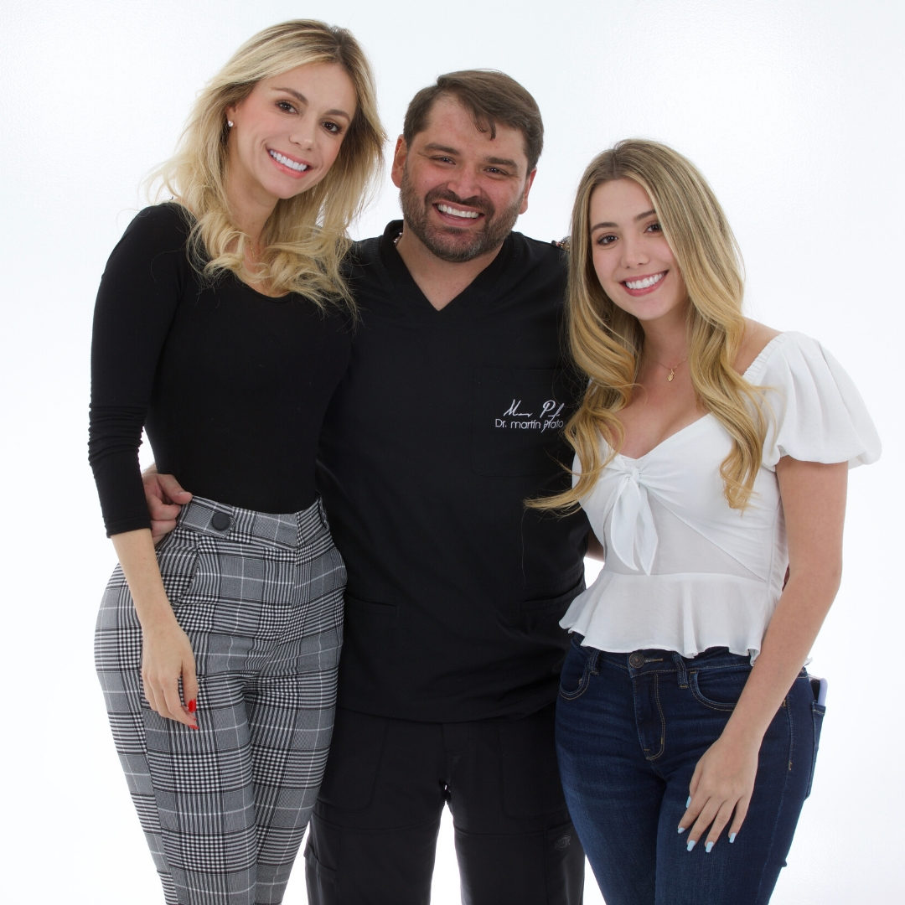
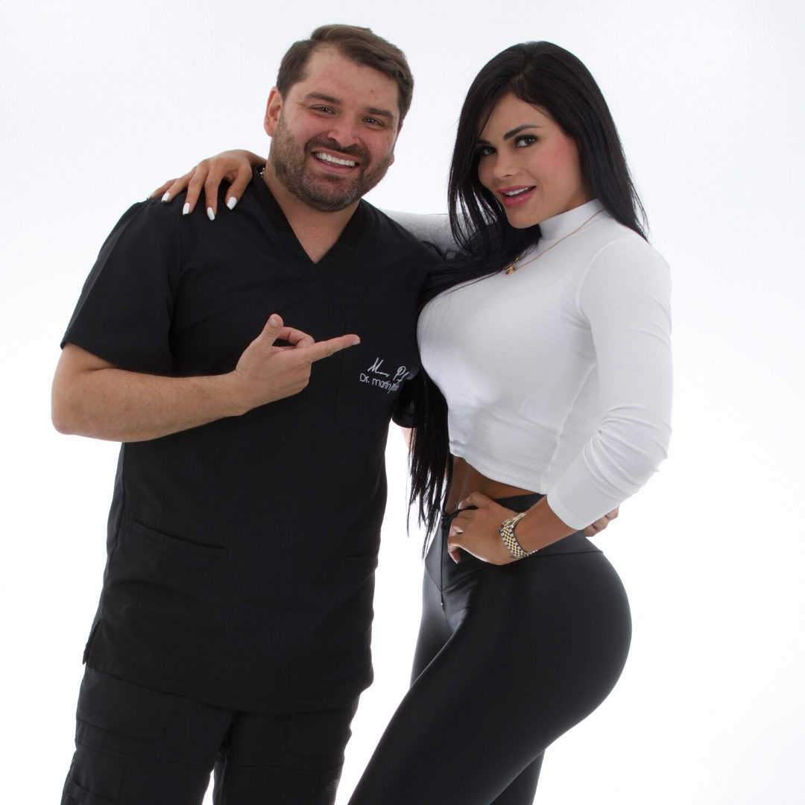
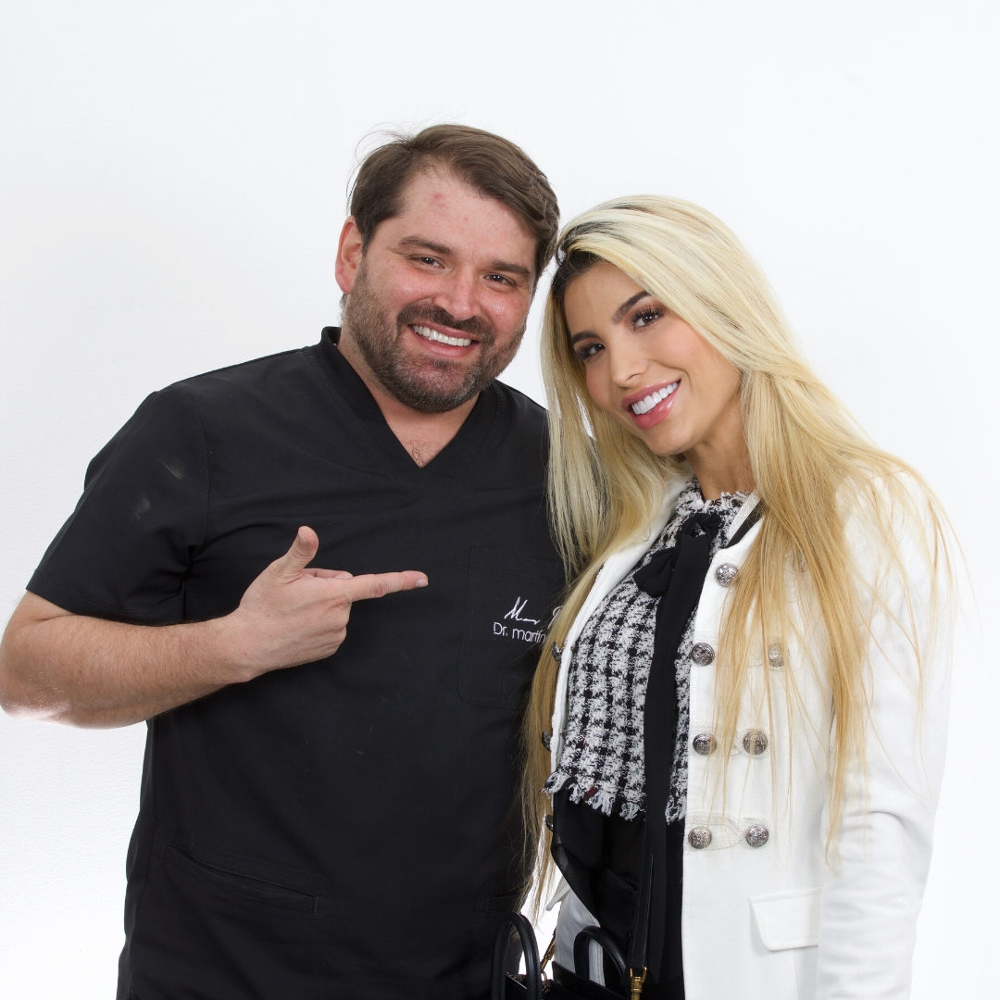

Salvamos tus dientes naturales. Tratamientos de conducto con tecnología de precisión.
La endodoncia consiste en la extirpación total de la pulpa dental. Se aplica en piezas dentales fracturadas, con caries profundas que presentan lesiones en su tejido pulpar que se conocen como pulpitis.
Esta condición es irreversible y la única opción terapéutica es la extirpación total de la pulpa dental y la obturación tridimensional del conducto dentario. La pulpitis está frecuentemente provocada por caries dentales profundas que alcanzan la pulpa y producen infección, originando dolor continuo y permanente que aumenta con estímulos fríos, calientes, alimentos dulces o ácidos.
No siempre estará indicada la endodoncia en dientes con pulpa necrótica o lesión irreversible. Se puede optar por la extracción de la pieza dental cuando:
Protegiendo y conservando tu salud dental.


